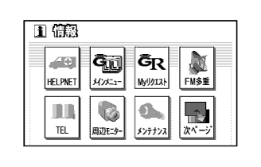
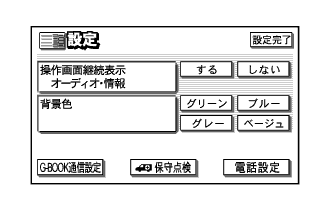

)reference.
)reference.Hands -free & one -touch type Helpnet system function inspection |
)reference.Diag activation
Start the engine.
Start diagnostic.(The point isreference)
 |
Select "Navi Inspection" on the diagram inspection menu screen.
 |
Select "TEL sound quality setting" on the navigation inspection menu screen and display the TEL sound quality setting screen.
 |
TEL sound quality setting
Operate the screen switch and adjust the volume.
| item | Display content |
|---|---|
| Recipient sound adjustment item | Adjust the receiving volume during hands -free calls (the voice of the other person you can hear) |
| Dealing volume adjustment item | Adjust the dose volume (your own voice heard by the other party) during hands -free calls |
)reference.Diag activation
Start the engine.
Start diagnostic.(The point isreference)
|
Select "Navi Inspection" on the diagram inspection menu screen.
|
Select "Simple May Day Test" on the Navi Inspection menu screen and display the May Day inspection screen.
 |
May Day inspection
Check the contents of the screen display.
| item | Display content |
|---|---|
| May Day Communication | Display "OK" if communication with the Helpnet Operation Center is successfully finished, and if it does not end properly, "NG" is displayed. |
| Portable device connection at the time of reporting | "OK" is displayed if the connection of the portable device is confirmed at the start of the report, and if the connection is not confirmed, "NG" is displayed. |
| Mobile machine number at the time of reporting | Display the phone number of the portable device used at the time of reporting |
| Date and time at the time of reporting | The date and time at the time of reporting is displayed in minutes/month/day: |
Confirm the details of the mailing communication result and the contents of the portable machine connection at the time of reporting.
reference)In -vehicle machine ID confirmation
|
Select "In -vehicle machine ID".
 |
Check the in -vehicle machine ID.
GPS reception confirmation
Confirm that the GPS mark is displayed on the current screen.
|  |
Manual maintenance inspection
Press the "information · G" button to display the information screen.
Press "Settings" on the information screen.
|  |
On the setting screen, press "Helpnet Maintenance Inspection" for 10 seconds or more.
 |
Start connecting to the Helpnet Operation Center.
When connected to the Helpnet Operation Center, it is first performed data communication to confirm that the current location of the vehicle, manual maintenance and inspection, and that the Helpnet Operation Center is registered as a member.
After the data communication is completed, it becomes a call mode.
 |
Call with the Helpnet Operation Center through the microphone to confirm that the call can be performed normally and that the call position is correct.
 |
After the conversation, the latest system information is displayed and the inspection is terminated.
Then display the current site screen.
Press the "information · G" button.
Confirm that the "Helpnet" switch is displayed on the information screen.